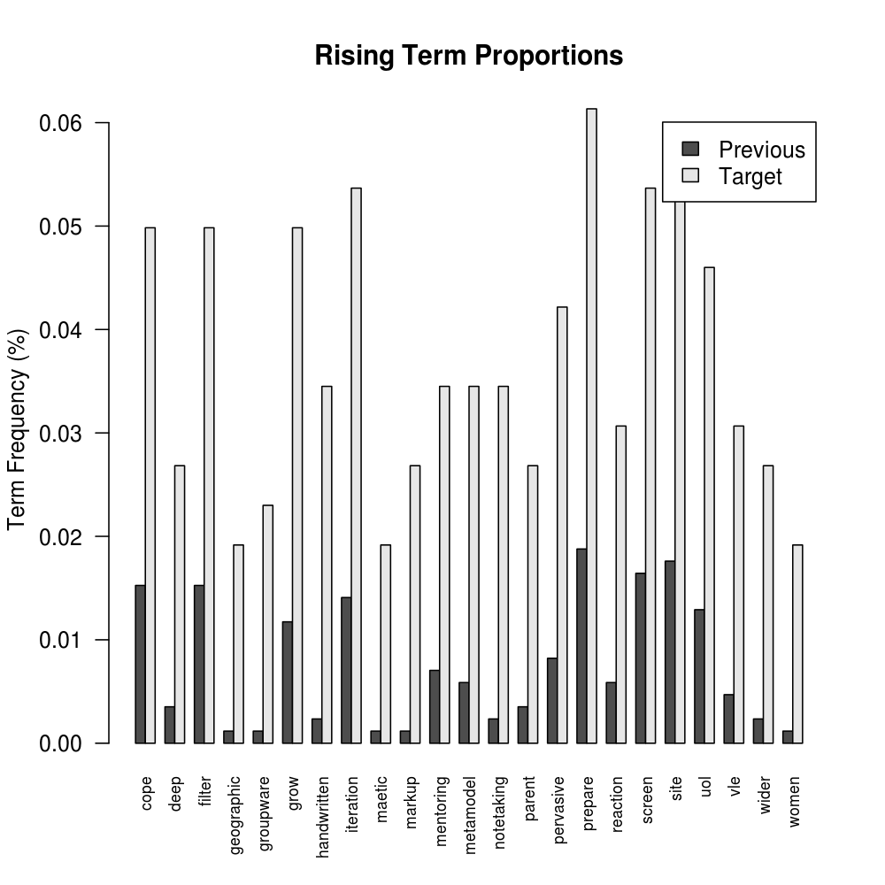
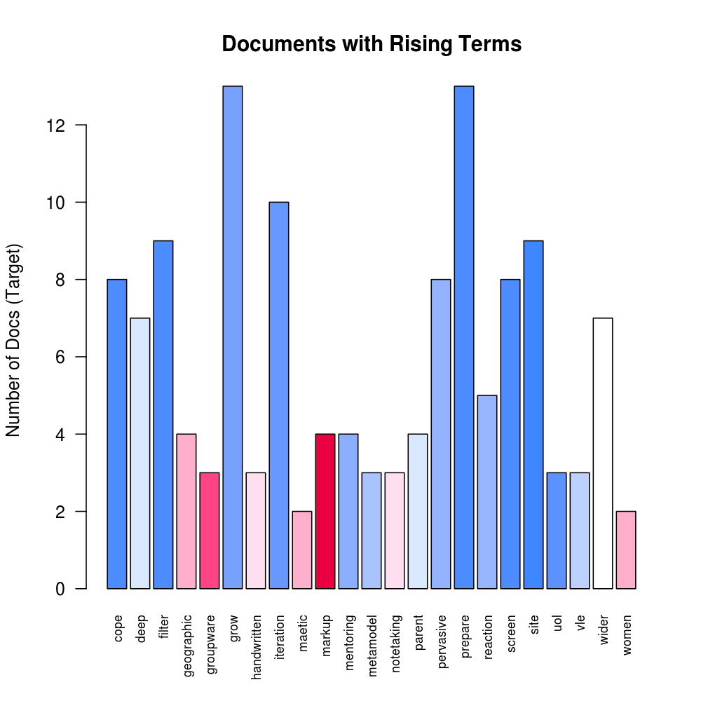
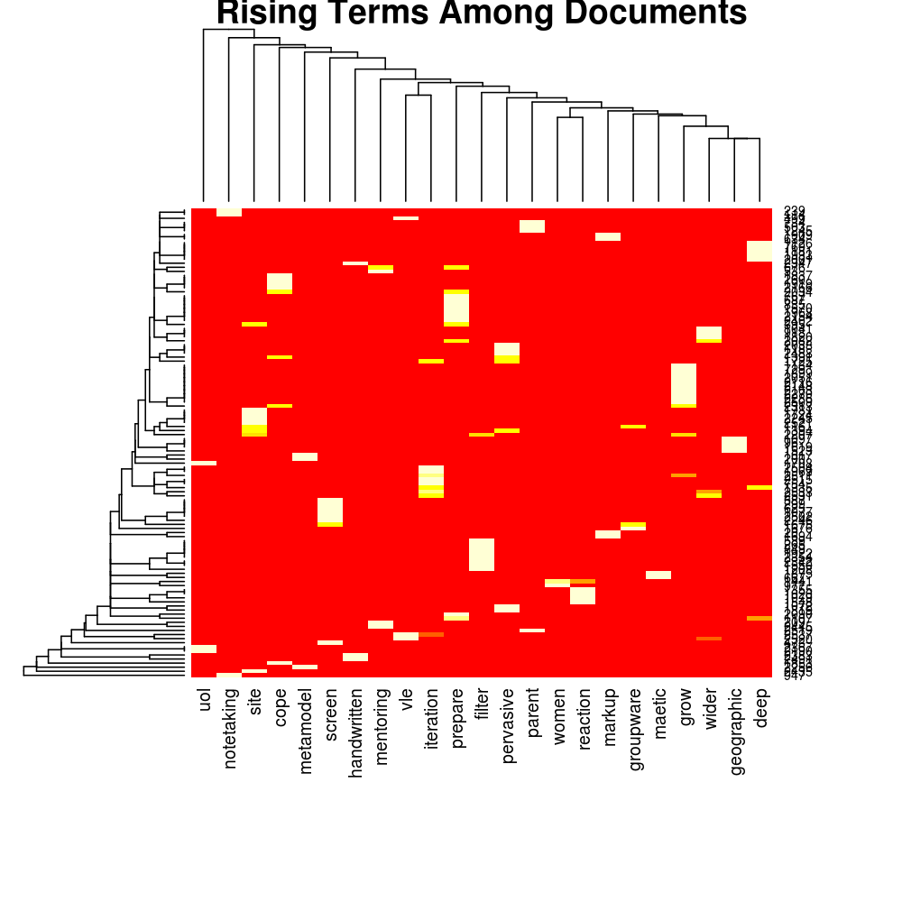
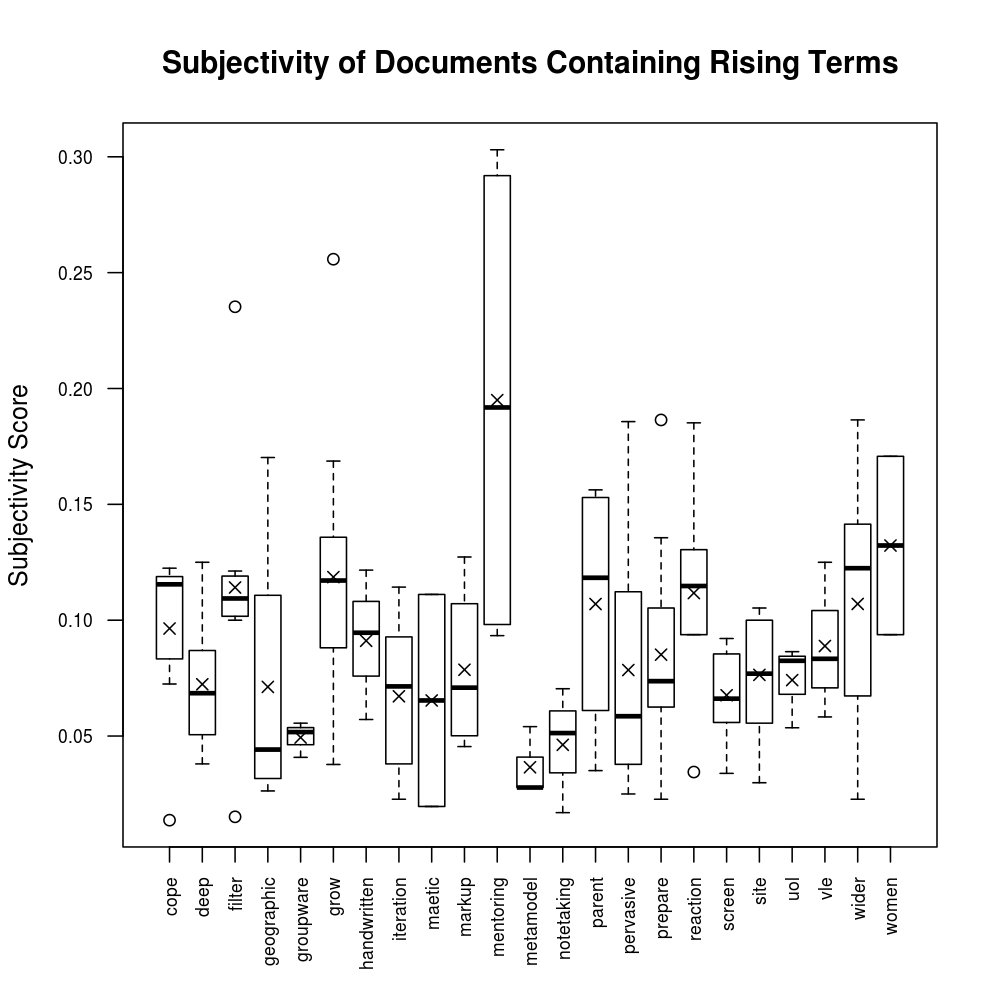
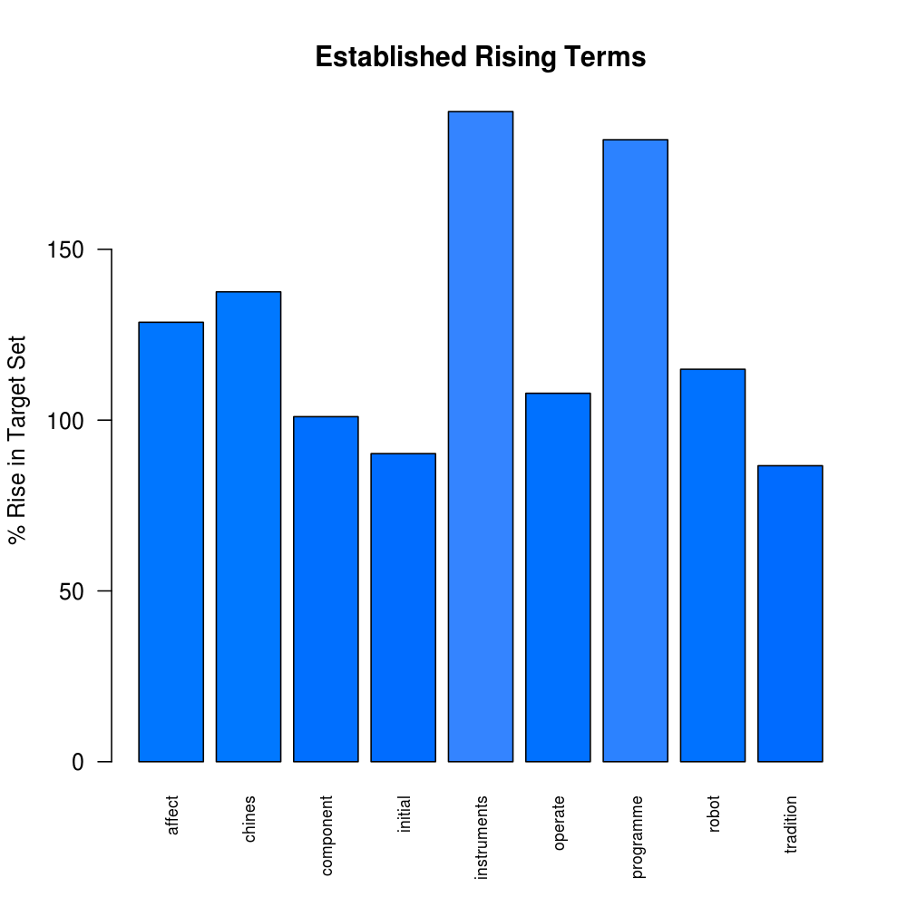
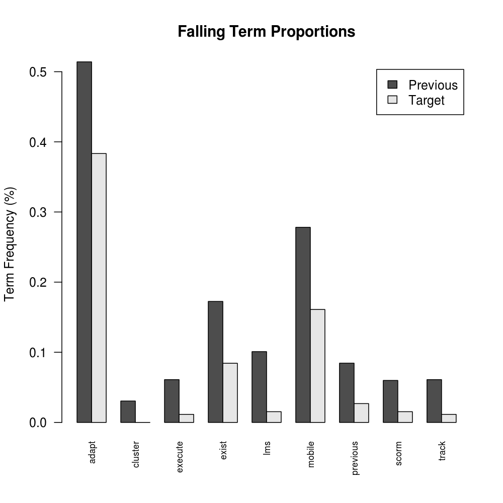

Conference Scan: Rising and Falling Terms - Conference Proceedings from ICALT, CAL, ECTEL and ICWL 2010
This is an un-interpreted and automatically-generated report on emerging, rising and falling terms from the abstracts of the
IEEE International Conference on Advanced Learning Technologies,
European Conference on Technology Enhanced Learning,
International Conference on Web-based Learning
and Computer Assisted Learning Conference.
It is one part of the "Weak Signals Analysis" work of the TEL-Map Project. The same analytical method is also applied to blogs, hence the term "document" is used in plots; this may be equated to an abstract in this report.
All plots will open in a new window/tab as 1000x1000 pixed images if clicked on.
The Method
The analysis involves the application of text mining to the abstracts of the conference proceedings. The set of abstracts from the target year (2010) is contrasted against a set from the previous 4 years. Pearson's "Chi Squared" test is applied to determine the probability that the frequency of terms in both of these two samples could be from the same hypothetical distribution. The probability that the difference in term frequency could be ascribed to chance - assuming this hypothesis is true - must be less than 0.5% for a term to be presented in this report. This is referred to as the "significance threshold" below.
Further informaton about the text mining process being used is available elsewhere but for the purpose of interpretation it should be noted that "stemming" and "stop-word" removal has been used. "Stop-word" removal means that common words are removed before beginning the analysis. "Stemming" involves the conversion of similar words that differ only by their ending into a truncated form that is used as the "term" in the analysis. For the purpose of readability the shortest word that produces the term is generally given, although sometimes the algorithm fails and the stemmed version is shown. This should be born in mind when examining the results.
Four views on the differences between the target and previous years' abstracts are presented:
- New Terms, where this report highlights terms that meet the significance threshold and appear in at least 2 different target-year abstracts but not at all in the previous years.
- Rising Terms, where term frequency rises to a statistically-significant level. A term must appear in at least 2 different target-year abstracts but must not have an average frequency of more than 0.02% in the previous years set. i.e. the Rising Terms view focusses on possible weak signals, possible new trends.
- Established Terms are similar to "Rising Terms" but appear with a frequency of 0.02% or more on average in the previous years and hence are considered to be established upwards trends rather than indicators of a possible weak signal. Since this report is primarily concerned with Weak Signal detection, relatively little emphasis is given to Established Terms.
- Falling Terms, are those terms showing a decrease between the previous years set and the target-year abstracts that exceeds a significance threshold of 1% (more lenient for falling terms).
For Rising, Established Falling Terms, the % change is calculated on the proportion of all stemmed words that are the term in question. For example if 2.00% of stemmed words in the previous years set was "learn" and 2.12% pertains to the current set, then the rise is 6%.
Statistics and Overall Pattern
Corpus Statistics
There are 328 abstracts in 2010 and 1635 in the 4 previous years. Within these abstracts, which define the corpus, there are 6411 distinct terms after removing stop words and applying stemming. The summary statistics for the number of times each term appears in the corpus are: mean=17.24, median=2, maximum=4186.
For the set of New Terms:
- the number of times each term appears in at least 2 different abstracts the target set but before applying the significance test has: mean=2.727, median=2, maximum=6.
- after selecting terms above the significance threshold, there are 15 terms in scope which appear in 24 out of the 328 target abstracts.
For the set of Rising Terms:
- the % rise from the previous years to the target year before applying the significance test has: mean=160.9, median=62.37, maximum=1848.
- after selecting terms above the significance threshold, there are 21 terms in scope which appear in 79 out of the 328 target abstracts.
The set of Falling Terms (the % fall from the previous years to the target year) before applying the singificance test has summary statistics of: mean=-88.93, median=-100, maximum=-0.07899.
New Terms
Figure 1: The number of terms that appear 1,2,3... times in the target year set not at all in the previous years. In this case there are 6 new terms that appear 4 times. NB: the low end is suppressed due to the requirement that terms appear in at lest 2 documents.
Rising and Falling Terms

Figure 2: Number of terms with a given % rise before applying the significance test.
Figure 3: Number of terms with a given % fall before filtering out those terms that do not meet the criterion of the significance test. A 100% fall indicates that the term does not appear in the target year's abstracts.
Auxillary Measures of Interest
In addition to the primary measures of interest - statistical significance and the percentage change - two more are calculated as an aid to judging the actual, as opposed to statistical, significance of differences between the previous years abstracts and the target-year set. The auxillary measures apply to the abstracts and are:
- Novelty, which is a measure of how unusual the abstract is, based on the terms appearing in it, compared to all other abstracts in the corpus.
- Subjectivity, which is a measure of the fraction of the words used that are listed as generally having either positive or negative sentiment associated with their occurrence (the Harvard General Inquirer lexicon is used). A high Subjectivity is assumed to indicate the author's active interest rather than passive observation; active interest may correlate with weak signals. A subjectivity of 0.1 indicates 10% of the words (after removel of stopwords) have connotations of positive or negative sentiment.
Figure 4: Distribution of novelty measure among abstracts.
Novelty= 1 - the minimum distance (specifically the cosine distance) between the abstract and any other abstract in 2010 and 1635 in the 4 previous years.
Figure 5: Distribution of standardised novelty measure among abstracts.
An abstract with median novelty will have a standardised novelty of 0 and a unique abstract a value of 1. Negative values indicate an abstract that has a closer "neighbour" than the median.
Since conference abstracts are quite short, hence contain few terms stopword removal, and the corpus size is modest, the Novelty Measure is typically skewed towards a high value. In this case it is not realistic to select out novel abstracts, whereas a high negative value for the Standardised Novely is a reasonalble indicator of similarity.
The papers containing the highest novelty scores are listed below.

Figure 6: Comparative distribution of positive and negative sentiment and subjectivity acore among abstracts.
The central box has a range defined by the 1st and 3rd quartiles and the limits of the "whiskers" are no more than 1.5x the interquartile range away from the box. Abstracts outside the range of the whiskers are individually plotted as circles and are deemed to be "outliers". The central bar indicates the median and the cross indicates the mean.
Figure 7: Balance of sentiment among the 10% most-subjective abstracts.
The papers containing the highest subjectivity scores are listed below.
Significant New Terms
Significant New Terms appear for the first time in at least 2 different abstracts in the target year of 2010 and meet the 0.5% "significance threshold".
Figure 8: Frequencies of occurrence of the New Terms in the target year.
Figure 9: Wordcloud of frequencies of occurrence of the New Terms in the target year, coloured and sized according to term frequency.
Uses
TagCanvas by "goat 1000".
The papers containing the significant new terms are listed below.
Figure 10: The number of abstracts containing each New Term. A New Term that appears in a large number of abstracts is likely to be a stronger indication of a new trend that a New Term that is concentrated in a single abstract.

Figure 11: Heatmap to show the distribution of the New Terms among abstracts. Red cells indicate the term does not appear. Orange cells indicate a relatively less-frequent term and yellow cells indicate terms that are relatively more frequent
among the New Terms in a given document. This also shows how terms may be clustered according to their occurrence and how abstracts may be clustered according to the Terms within them. The numbers are the identifiers assigned to each paper.
Note: In plots such as the above, where terms are shown they will usually be a short word but may occasionally be truncated or have an unusual ending. This is a consequence of the stemming process, where related words are rendered into a single form that is used in the processing. The word that actually occurs in a given abstract may be one of the related forms. The unusual endings occur when the reverse-lookup algorithm fails. It should also be noted that punctuation is removed so hyphenated forms become concatenated. An unfamiliar term may be an abbreviation or project/product acronym.

Figure 12: Spread of standardised novelty among abstracts containing each New Term.
Figure 13: Spread of subjectivity score among abstracts containing each New Term.
Note: care should be exercised in interpreting these two plots since the number of abstracts containing each term is very small.
The papers containing the significant new terms are listed below.
Significant Rising Terms
Significant Rising Terms are those that meet the significance threshold criterion and appear in at least 2 different abstracts from 2010 but have an average frequency of less than 0.02% (the "Established Term" threshold) in the previous years set.

Figure 14: Significant rising terms and their level of significance (-log
10(probability that the rise is due to chance only)). Colour coding matches the significance value.
Figure 15: Wordcloud of significance level of the Rising Terms in the target year, coloured and sized according to term frequency.
Uses
TagCanvas by "goat 1000".
The papers containing the significant rising terms are listed below.

Figure 16: Significant rising terms and their percentage of rise. Colour coding matches the % rise. The plot is cut off at a ceiling of 800%.
Figure 17: The number of occurrences of the Rising Terms in the past and target sets of abstracts.

Figure 18: Comparison of the proportion of all stemmed words that are the term in question in both the previous and target year.

Figure 19: The number of abstracts containing each Significant Rising Term. The colour coding matches the % rise in the proportion of term occurrence. A Term that appears in a large number of abstracts is likely to be a stronger indication of a new trend that a Term that is concentrated in a single abstract.

Figure 20: Heatmap to show the distribution of the Rising Terms among abstracts. Red cells indicate the term does not appear. Orange cells indicate a relatively less-frequent term and yellow cells indicate terms that are relatively more frequent
in a given document. This also shows how terms may be clustered according to their occurrence and how abstracts may be clustered according to the Terms within them. The numbers are the identifiers assigned to each paper.

Figure 21: Spread of standardised novelty among abstracts containing each Rising Term.

Figure 22: Spread of subjectivity score among abstracts containing each Rising Term.
Note: care should be exercised in interpreting these two plots since the number of abstracts for some terms is very small.
Correlation Between New and Rising Terms
This shows how significant terms from either the "New" and "Rising" sets appear together in abstracts. The visualisation is created using Gephi (v0.8 alpha). Using Gephi provides for good interactivity; the RisingTerm-Co-occurrence.gephi file can be downloaded and used in Gephi.
Figure 23: Graph of Co-occurrence of New and Rising Terms.
Interpreting the graph: terms are colour coded according to clustering aparrent in the results; the nodes are scaled according to the statistical significance; the lines joining the nodes are scaled according to the number of co-occurrences.
The papers containing the significant rising terms are listed below.
Significant Established Terms
These are terms with a statistically-significant increase but with a freqency of 0.02% or more on average in the years prior to 2010 and hence are considered to be established upwards trends rather than indicators of a possible weak signal. Since this report is primarily concerned with Weak Signal detection, relatively little emphasis is given to Established Terms.

Figure 25: Significant rising terms and their percentage of rise. Colour coding is identical to the Rising Term plot. The plot is cut off at a ceiling of 800%.

Figure 26: Significant rising terms and their level of significance (-log
10(probability that the rise is due to chance only)). Colour coding matches the significance value as in the Rising Term plot.
Significant Falling Terms

Figure 27: Significant falling terms and their percentage of fall. Colour coding matches the % fall.

Figure 28: Significant falling terms. Colour coding matches the statistical significance.
Figure 29: The number of occurrences of the Falling Terms in the past and target sets of abstracts.

Figure 30: Comparison of the proportion of all stemmed words that are the term in question in both the previous and target year.
Papers Highlighted by the Analysis
Papers marked "Top 10 Abstract" are those where the abstract contains the greatest number of distinct terms that are either Rising, Established or New.
Papers Containing the Significant New Terms
See the end of this report for information about the source of abstracts and access to the conference proceedings.
Papers Containing "blood"
- A Preliminary Study on Learners Physiological Measurements in Educational Hypermedia.
-
Nikos Tsianos, Panagiotis Germanakos, Zacharias Lekkas, Anna Saliarou, Costas Mourlas, George Samaras, ICALT 2010 (id=636
*Top 10 Abstract*)
Ancillary Measures: Novelty= -0.327 , Subjectivity= 0.056 Max Author Betweenness= 3.76e-07
- Self-Esteem Conditioning for Learning Conditioning.
-
Imene Jraidi, Maher Chaouachi, Claude Frasson, ICALT 2010 (id=1355
*Top 10 Abstract*)
Ancillary Measures: Novelty= -0.327 , Subjectivity= 0.034 Max Author Betweenness= 2.11e-05
Papers Containing "circulatori"
- Collaborative Development of an Augmented Reality Application for Digestive and Circulatory Systems Teaching.
-
David C. Pérez López, Manuel Contero, Mariano Alcañiz Raya, ICALT 2010 (id=903
*Top 10 Abstract*)
Ancillary Measures: Novelty= 0.106 , Subjectivity= 0.169 Max Author Betweenness= 4.89e-07
- Learning Biology with the Animated Agent in Game Based Learning Environment.
-
Hsin I Yung, ICALT 2010 (id=1211
)
Ancillary Measures: Novelty= 0.031 , Subjectivity= 0.125 Max Author Betweenness= 0
Papers Containing "females"
- The Effects of Prior Computer Experience and Gender on High School Students' Learning of Computer Science Concepts from Instructional Simulations.
-
Ming-Puu Chen, ICALT 2010 (id=183
)
Ancillary Measures: Novelty= -0.043 , Subjectivity= 0.114 Max Author Betweenness= 0
- Offering Early Success Experiences in Software Construction: Experiences Teaching Dynamic Website Development to High School Girls.
-
Mary Beth Rosson, Hansa Sinha, Tisha Hansford, Jan Mahar, ICALT 2010 (id=1441
*Top 10 Abstract*)
Ancillary Measures: Novelty= -0.147 , Subjectivity= 0.094 Max Author Betweenness= 2.54e-06
Papers Containing "fingerprint"
- Web Tests in LMS Using Fingerprint Identification.
-
Charo Gil, Manuel Castro, Mudasser F. Wyne, Russ Meier, ICALT 2010 (id=514
)
Ancillary Measures: Novelty= 0.191 , Subjectivity= 0.045 Max Author Betweenness= 0.000474
- Automatic Detection of Local Reuse.
-
Arno Mittelbach, Lasse Lehmann, Christoph Rensing, Ralf Steinmetz, ECTEL 2010 (id=1873
)
Ancillary Measures: Novelty= 0.03 , Subjectivity= 0.062 Max Author Betweenness= 0.000747
Papers Containing "girls"
- Offering Early Success Experiences in Software Construction: Experiences Teaching Dynamic Website Development to High School Girls.
-
Mary Beth Rosson, Hansa Sinha, Tisha Hansford, Jan Mahar, ICALT 2010 (id=1441
*Top 10 Abstract*)
Ancillary Measures: Novelty= -0.147 , Subjectivity= 0.094 Max Author Betweenness= 2.54e-06
- Spatializing Social Practices in Mobile Game-Based Learning.
-
Susan Gwee, Yam San Chee, Ek Ming Tan, ICALT 2010 (id=1538
*Top 10 Abstract*)
Ancillary Measures: Novelty= 0.094 , Subjectivity= 0 Max Author Betweenness= 0
Papers Containing "heart"
- A Preliminary Study on Learners Physiological Measurements in Educational Hypermedia.
-
Nikos Tsianos, Panagiotis Germanakos, Zacharias Lekkas, Anna Saliarou, Costas Mourlas, George Samaras, ICALT 2010 (id=636
*Top 10 Abstract*)
Ancillary Measures: Novelty= -0.327 , Subjectivity= 0.056 Max Author Betweenness= 3.76e-07
- Prediction of Players Motivational States Using Electrophysiological Measures during Serious Game Play.
-
Lotfi Derbali, Claude Frasson, ICALT 2010 (id=710
*Top 10 Abstract*)
Ancillary Measures: Novelty= 0.15 , Subjectivity= 0.183 Max Author Betweenness= 2.11e-05
Papers Containing "leader"
- Deepthink: A Second Life Environment for Part-time Research Students at a Distance.
-
Lucia Rapanotti, Leonor Barroca, Maria Vargas-Vera, Ahmad J. Reeves, ICALT 2010 (id=575
)
Ancillary Measures: Novelty= 0 , Subjectivity= 0.023 Max Author Betweenness= 0
- A Chorus Learning Support System Based on the Tutoring Knowledge of the Chorus Leader.
-
Mizue Kayama, Kazunori Itoh, Kazushi Asanuma, Masami Hashimoto, Makoto Otani, ICALT 2010 (id=1425
)
Ancillary Measures: Novelty= 0.13 , Subjectivity= 0.122 Max Author Betweenness= 0.000449
Papers Containing "males"
- The Effects of Prior Computer Experience and Gender on High School Students' Learning of Computer Science Concepts from Instructional Simulations.
-
Ming-Puu Chen, ICALT 2010 (id=183
)
Ancillary Measures: Novelty= -0.043 , Subjectivity= 0.114 Max Author Betweenness= 0
- Offering Early Success Experiences in Software Construction: Experiences Teaching Dynamic Website Development to High School Girls.
-
Mary Beth Rosson, Hansa Sinha, Tisha Hansford, Jan Mahar, ICALT 2010 (id=1441
*Top 10 Abstract*)
Ancillary Measures: Novelty= -0.147 , Subjectivity= 0.094 Max Author Betweenness= 2.54e-06
Papers Containing "offtask"
- Design for Off-task Interaction - Rethinking Pedagogy in Technology Enhanced Learning.
-
Agneta Gulz, Annika Silvervarg, Björn Sjödén, ICALT 2010 (id=914
)
Ancillary Measures: Novelty= 0.068 , Subjectivity= 0.171 Max Author Betweenness= 0
- Enhancing Learning with Off-Task Social Dialogues.
-
Jozef Tvarozek, Mária Bieliková, ECTEL 2010 (id=1891
)
Ancillary Measures: Novelty= -0.269 , Subjectivity= 0.045 Max Author Betweenness= 4.51e-07
Papers Containing "pulse"
- A Preliminary Study on Learners Physiological Measurements in Educational Hypermedia.
-
Nikos Tsianos, Panagiotis Germanakos, Zacharias Lekkas, Anna Saliarou, Costas Mourlas, George Samaras, ICALT 2010 (id=636
*Top 10 Abstract*)
Ancillary Measures: Novelty= -0.327 , Subjectivity= 0.056 Max Author Betweenness= 3.76e-07
- Self-Esteem Conditioning for Learning Conditioning.
-
Imene Jraidi, Maher Chaouachi, Claude Frasson, ICALT 2010 (id=1355
*Top 10 Abstract*)
Ancillary Measures: Novelty= -0.327 , Subjectivity= 0.034 Max Author Betweenness= 2.11e-05
Papers Containing "selfreport"
- A Preliminary Study on Learners Physiological Measurements in Educational Hypermedia.
-
Nikos Tsianos, Panagiotis Germanakos, Zacharias Lekkas, Anna Saliarou, Costas Mourlas, George Samaras, ICALT 2010 (id=636
*Top 10 Abstract*)
Ancillary Measures: Novelty= -0.327 , Subjectivity= 0.056 Max Author Betweenness= 3.76e-07
- An Analysis of Students' Intention to Use Ubiquitous Video Game-Based Learning System.
-
Chun-Yi Shen, Han-Bin Chang, Wen-Chih Chang, Te-Hua Wang, ICALT 2010 (id=815
)
Ancillary Measures: Novelty= -0.107 , Subjectivity= 0.075 Max Author Betweenness= 3.11e-05
- Who Students Interact With? A Social Network Analysis Perspective on the Use of Twitter in Language Learning.
-
Carsten Ullrich, Kerstin Borau, Karen Stepanyan, ECTEL 2010 (id=2050
)
Ancillary Measures: Novelty= -1.412 , Subjectivity= 0.02 Max Author Betweenness= 0.0019
Papers Containing "skin"
- A Preliminary Study on Learners Physiological Measurements in Educational Hypermedia.
-
Nikos Tsianos, Panagiotis Germanakos, Zacharias Lekkas, Anna Saliarou, Costas Mourlas, George Samaras, ICALT 2010 (id=636
*Top 10 Abstract*)
Ancillary Measures: Novelty= -0.327 , Subjectivity= 0.056 Max Author Betweenness= 3.76e-07
- Prediction of Players Motivational States Using Electrophysiological Measures during Serious Game Play.
-
Lotfi Derbali, Claude Frasson, ICALT 2010 (id=710
*Top 10 Abstract*)
Ancillary Measures: Novelty= 0.15 , Subjectivity= 0.183 Max Author Betweenness= 2.11e-05
- Self-Esteem Conditioning for Learning Conditioning.
-
Imene Jraidi, Maher Chaouachi, Claude Frasson, ICALT 2010 (id=1355
*Top 10 Abstract*)
Ancillary Measures: Novelty= -0.327 , Subjectivity= 0.034 Max Author Betweenness= 2.11e-05
Papers Containing "stepbystep"
- ALGOWEB: A Web-Based Environment for Learning Introductory Programming.
-
Ricardo Vargas Dorneles, Delcino Picinin Jr., André Gustavo Adami, ICALT 2010 (id=1640
)
Ancillary Measures: Novelty= 0.197 , Subjectivity= 0.069 Max Author Betweenness= 0
- Automatically Constructing a Compact Concept Map of Dance Motion with Motion Captured Data.
-
Yang Yang, Howard Leung, Lihua Yue, Liqun Deng, ICWL 2010 (id=2288
)
Ancillary Measures: Novelty= 0.119 , Subjectivity= 0.162 Max Author Betweenness= 0.00225
- A Scaffolding Support System for English Essay Reading.
-
Jia-Jiunn Lo, Shiou-Wen Yeh, Chao-Shien Sung, ICWL 2010 (id=2345
)
Ancillary Measures: Novelty= 0.11 , Subjectivity= 0.057 Max Author Betweenness= 0.000225
Papers Containing "wall"
- Smart Timetable Plate for Classroom.
-
Yuan-Chih Yu, Shing-chern D. You, Dwen-Ren Tsai, ICALT 2010 (id=1625
)
Ancillary Measures: Novelty= 0.161 , Subjectivity= 0.192 Max Author Betweenness= 0
- Affordances of Presentations in Multi-Display Learning Spaces for Supporting Small Group Discussion.
-
Brett Bligh, Mike Sharples, ECTEL 2010 (id=1954
)
Ancillary Measures: Novelty= -0.031 , Subjectivity= 0.08 Max Author Betweenness= 0.000243
- Tackling HCI Challenges of Creating Personalised, Pervasive Learning Ecosystems.
-
Judy Kay, Bob Kummerfeld, ECTEL 2010 (id=2144
)
Ancillary Measures: Novelty= 0.028 , Subjectivity= 0.105 Max Author Betweenness= 0
Papers Containing "wave"
- Prediction of Players Motivational States Using Electrophysiological Measures during Serious Game Play.
-
Lotfi Derbali, Claude Frasson, ICALT 2010 (id=710
*Top 10 Abstract*)
Ancillary Measures: Novelty= 0.15 , Subjectivity= 0.183 Max Author Betweenness= 2.11e-05
- Students' Competitive Preferences on Multiuser Wireless Sensor Classroom Interactive Environment.
-
Ben Chang, Chien Wen Chen, ICALT 2010 (id=834
)
Ancillary Measures: Novelty= 0.189 , Subjectivity= 0.02 Max Author Betweenness= 0.000113
- Using Social Software for Teamwork and Collaborative Project Management in Higher Education.
-
Na Li, Carsten Ullrich, Sandy El Helou, Denis Gillet, ICWL 2010 (id=2323
)
Ancillary Measures: Novelty= -0.102 , Subjectivity= 0.073 Max Author Betweenness= 0.0036
Papers Containing the Significant Rising Terms
See the end of this report for information about the source of abstracts and access to the conference proceedings.
Papers Containing "besides"
- 3D Digital Simulations in Participative Design of the Boulevard in Putrajaya: Implications on Academic, Organizational, and Informal Learning.
-
Rashidah Ab. Rahman, ICALT 2010 (id=197
)
Ancillary Measures: Novelty= 0.261 , Subjectivity= 0.104 Max Author Betweenness= 0
- Re-engineering of Pedagogical Scenarios Using the Data Combination Language and Usage Tracking Language.
-
Diem Pham Thi Ngoc, Sébastien Iksal, Christophe Choquet, ICALT 2010 (id=562
)
Ancillary Measures: Novelty= -0.636 , Subjectivity= 0.108 Max Author Betweenness= 0.00144
- Identifying Animals with Dynamic Location-aware and Semantic Hierarchy-Based Image Browsing for Different Cognitive Style Learners.
-
Dunwei Wen, Ming-Chi Liu, Yueh-Min Huang, Kinshuk, Pi-Hsia Hung, ICALT 2010 (id=672
)
Ancillary Measures: Novelty= 0.084 , Subjectivity= 0.093 Max Author Betweenness= 0.026
- Using Tangible Learning Companions in English Education.
-
Yi Hsuan Wang, Shelley Shwu-Ching Young, Jyh-Shing Roger Jang, ICALT 2010 (id=691
)
Ancillary Measures: Novelty= -0.473 , Subjectivity= 0.07 Max Author Betweenness= 0.000786
- An Approach for Designing and Implementing a Computerized Adaptive Testing Tool for Applicants with Disabilities.
-
Monjia Balloumi, Mohsen Laâbidi, Mohamed Jemni, ICALT 2010 (id=1059
)
Ancillary Measures: Novelty= -0.944 , Subjectivity= 0.161 Max Author Betweenness= 0.00157
- Integration of External Tools in Virtual Learning Environments: Main Design Issues and Alternatives.
-
Carlos Alario-Hoyos, Juan I. Asensio-Pérez, Miguel L. Bote-Lorenzo, Eduardo Gómez-Sánchez, Guillermo Vega-Gorgojo, Adolfo Ruiz-Calleja, ICALT 2010 (id=1149
)
Ancillary Measures: Novelty= -0.054 , Subjectivity= 0.062 Max Author Betweenness= 0.00192
- A Flexible Mechanism for Providing Adaptivity Based on Learning Styles in Learning Management Systems.
-
Sabine Graf, Kinshuk, Cindy Ives, ICALT 2010 (id=1385
)
Ancillary Measures: Novelty= -0.008 , Subjectivity= 0.161 Max Author Betweenness= 0.026
- A Proposal to Improve the Simple Query Interface (SQI) of Learning Objects Repositories.
-
Salvador Otón, José Ramón Hilera, Eva García, Antonio García-Cabot, Luis de Marcos, Antonio Ortiz, José Antonio Gutiérrez de Mesa, José-Javier Martínez, José María Gutiérrez, Roberto Barchino, ICALT 2010 (id=1600
)
Ancillary Measures: Novelty= -0.37 , Subjectivity= 0.098 Max Author Betweenness= 1.5e-07
- Smart Timetable Plate for Classroom.
-
Yuan-Chih Yu, Shing-chern D. You, Dwen-Ren Tsai, ICALT 2010 (id=1625
)
Ancillary Measures: Novelty= 0.161 , Subjectivity= 0.192 Max Author Betweenness= 0
- Emotional Strategies for Vocabulary Learning.
-
Ramla Ghali, Claude Frasson, ICALT 2010 (id=1659
)
Ancillary Measures: Novelty= 0.144 , Subjectivity= 0.082 Max Author Betweenness= 2.11e-05
- TAO - A Versatile and Open Platform for Technology-Based Assessment.
-
Eric Ras, Judith Swietlik, Patrick Plichart, Thibaud Latour, ECTEL 2010 (id=1868
)
Ancillary Measures: Novelty= -0.263 , Subjectivity= 0.094 Max Author Betweenness= 0.000338
Papers Containing "competitive"
- A Diversity-Enhanced Genetic Algorithm to Characterize the Questions of a Competitive e-Learning System.
-
Elena Verdú, María Jesús Verdú, Luisa M. Regueras, Juan Pablo de Castro, ICALT 2010 (id=600
)
Ancillary Measures: Novelty= 0.091 , Subjectivity= 0.127 Max Author Betweenness= 0
- Students' Competitive Preferences on Multiuser Wireless Sensor Classroom Interactive Environment.
-
Ben Chang, Chien Wen Chen, ICALT 2010 (id=834
)
Ancillary Measures: Novelty= 0.189 , Subjectivity= 0.02 Max Author Betweenness= 0.000113
- Learning by Pet-training Competition: Alleviating Negative Influences of Direction Competition by Training Pets to Compete in Game-Based Environments.
-
Zhi-Hong Chen, Calvin C. Y. Liao, Tak-Wai Chan, ICALT 2010 (id=1369
*Top 10 Abstract*)
Ancillary Measures: Novelty= 0.091 , Subjectivity= 0.226 Max Author Betweenness= 0.00687
- A Simple E-learning System Based on Classroom Competition.
-
Iván Cantador, José M. Conde, ECTEL 2010 (id=1857
)
Ancillary Measures: Novelty= 0.136 , Subjectivity= 0.138 Max Author Betweenness= 0
Papers Containing "eassess"
- Case-Based Medical E-assessment System.
-
Rozemary Scarlat, Liana Stanescu, Elvira Popescu, Dumitru Dan Burdescu, ICALT 2010 (id=984
)
Ancillary Measures: Novelty= 0.24 , Subjectivity= 0.075 Max Author Betweenness= 2.72e-06
- A Set of Software Tools to Build an Author Assessment Package on Moodle: Implementing the AEEA Proposal.
-
Beatriz Eugenia Florián Gaviria, Silvia Baldiris, Ramón Fabregat, Alexis De la Hoz Manotas, ICALT 2010 (id=1322
)
Ancillary Measures: Novelty= -0.052 , Subjectivity= 0.09 Max Author Betweenness= 6.11e-07
- A Formative eAssessment Co-Design Case Study.
-
David A. Bacigalupo, W. I. Warburton, E. A. Draffan, Pei Zhang, Lester Gilbert, Gary B. Wills, ICALT 2010 (id=1494
)
Ancillary Measures: Novelty= 0.221 , Subjectivity= 0.125 Max Author Betweenness= 0.00214
Papers Containing "figure"
- Toys++ AR Embodied Agents as Tools to Learn by Building.
-
Luca Simeone, Salvatore Iaconesi, ICALT 2010 (id=14
)
Ancillary Measures: Novelty= 0.121 , Subjectivity= 0.059 Max Author Betweenness= 0
- An Online Collaborative Learning Platform with Annotation on Figures.
-
Ping-Lin Fan, Hsueh-Wu Wang, Wei-Hsien Wu, Su-Ju Lu, Min-Chung Ke, Han-Jang Wu, ICALT 2010 (id=247
)
Ancillary Measures: Novelty= 0.045 , Subjectivity= 0.119 Max Author Betweenness= 0
Papers Containing "gameplay"
- Game-play as Knowledge Transformation Process for Learning.
-
Ming-Puu Chen, Chun-Yi Shen, ICALT 2010 (id=794
)
Ancillary Measures: Novelty= -0.153 , Subjectivity= 0.116 Max Author Betweenness= 6.28e-06
- Spatializing Social Practices in Mobile Game-Based Learning.
-
Susan Gwee, Yam San Chee, Ek Ming Tan, ICALT 2010 (id=1538
*Top 10 Abstract*)
Ancillary Measures: Novelty= 0.094 , Subjectivity= 0 Max Author Betweenness= 0
Papers Containing "gender"
- The Effects of Prior Computer Experience and Gender on High School Students' Learning of Computer Science Concepts from Instructional Simulations.
-
Ming-Puu Chen, ICALT 2010 (id=183
)
Ancillary Measures: Novelty= -0.043 , Subjectivity= 0.114 Max Author Betweenness= 0
- Spatializing Social Practices in Mobile Game-Based Learning.
-
Susan Gwee, Yam San Chee, Ek Ming Tan, ICALT 2010 (id=1538
*Top 10 Abstract*)
Ancillary Measures: Novelty= 0.094 , Subjectivity= 0 Max Author Betweenness= 0
- Who Students Interact With? A Social Network Analysis Perspective on the Use of Twitter in Language Learning.
-
Carsten Ullrich, Kerstin Borau, Karen Stepanyan, ECTEL 2010 (id=2050
)
Ancillary Measures: Novelty= -1.412 , Subjectivity= 0.02 Max Author Betweenness= 0.0019
Papers Containing "hybrid"
- An Evaluation of Diagnosis in a Learning Environment for Object-Oriented Modeling.
-
Ludovic Auxepaules, Dominique Py, ICALT 2010 (id=1450
)
Ancillary Measures: Novelty= -0.318 , Subjectivity= 0.013 Max Author Betweenness= 0
- Recommending Learning Objects According to a Teachers' Contex Model.
-
Jorge Bozo, Rosa Alarcón, Sebastian Iribarra, ECTEL 2010 (id=1942
)
Ancillary Measures: Novelty= -0.259 , Subjectivity= 0.059 Max Author Betweenness= 0
- Improving Hybrid Learning of Physical Education by Video Review.
-
Yajun Pang, ICWL 2010 (id=2484
)
Ancillary Measures: Novelty= 0.303 , Subjectivity= 0.05 Max Author Betweenness= 0
Papers Containing "negative"
- Students' Perceptions of the Factors Leading to Unsuccessful Group Collaboration.
-
Shuangyan Liu, Mike Joy, Nathan Griffiths, ICALT 2010 (id=165
)
Ancillary Measures: Novelty= -0.015 , Subjectivity= 0.13 Max Author Betweenness= 0.000565
- Design and Evaluation of an Affective Interface of the E-learning Systems.
-
Hui-Chun Chuang, Chin-Yeh Wang, Gwo-Dong Chen, Chen-Chung Liu, Baw-Jhiune Liu, ICALT 2010 (id=735
)
Ancillary Measures: Novelty= -0.232 , Subjectivity= 0.2 Max Author Betweenness= 0.00441
- Using Feedback Tags and Sentiment Analysis to Generate Sharable Learning Resources Investigating Automated Sentiment Analysis of Feedback Tags in a Programming Course.
-
Stephen Cummins, Liz Burd, Andrew Hatch, ICALT 2010 (id=1004
)
Ancillary Measures: Novelty= 0.086 , Subjectivity= 0.039 Max Author Betweenness= 1.5e-07
- Learning by Pet-training Competition: Alleviating Negative Influences of Direction Competition by Training Pets to Compete in Game-Based Environments.
-
Zhi-Hong Chen, Calvin C. Y. Liao, Tak-Wai Chan, ICALT 2010 (id=1369
*Top 10 Abstract*)
Ancillary Measures: Novelty= 0.091 , Subjectivity= 0.226 Max Author Betweenness= 0.00687
- Content, Social, and Metacognitive Statements: An Empirical Study Comparing Human-Human and Human-Computer Tutorial Dialogue.
-
Myroslava Dzikovska, Natalie B. Steinhauser, Johanna D. Moore, Gwendolyn E. Campbell, Katherine M. Harrison, Leanne S. Taylor, ECTEL 2010 (id=2134
*Top 10 Abstract*)
Ancillary Measures: Novelty= 0.037 , Subjectivity= 0.118 Max Author Betweenness= 1.13e-07
- Free-Riding in Collaborative Diagrams Drawing.
-
Furio Belgiorno, Ilaria Manno, Giuseppina Palmieri, Vittorio Scarano, ECTEL 2010 (id=2172
)
Ancillary Measures: Novelty= 0.077 , Subjectivity= 0.061 Max Author Betweenness= 3.78e-07
- An Emotion Regulation Model in an E-Learning Environment.
-
Jiwei Qin, Qinghua Zheng, Haifei Li, Huisan Zhang, ICWL 2010 (id=2306
)
Ancillary Measures: Novelty= 0.144 , Subjectivity= 0.188 Max Author Betweenness= 5.19e-06
Papers Containing "oral"
- An Audio Book Platform for Early EFL Oral Reading Fluency.
-
Kuo-Ping Liu, Cheng-Chung Liu, Chih-Hsin Huang, Kuo-Chun Hung, Chia-Jung Chang, ICALT 2010 (id=37
*Top 10 Abstract*)
Ancillary Measures: Novelty= 0.207 , Subjectivity= 0.095 Max Author Betweenness= 6.02e-07
- Extending Open Space Technology for Blended Learning.
-
Isabel Pereira, Antonio Dias Figueiredo, ICALT 2010 (id=537
)
Ancillary Measures: Novelty= -0.047 , Subjectivity= 0.033 Max Author Betweenness= 0
- Winkball for Schools: An Advanced Video Modelling Technology for Learning Visual and Oral Communication Skills.
-
James Ohene-Djan, ICALT 2010 (id=1190
)
Ancillary Measures: Novelty= 0.1 , Subjectivity= 0.067 Max Author Betweenness= 3.61e-06
Papers Containing "ples"
- An Architecture for Layering and Integration of Learning Ontologies, Applied to Personal Learning Environments and Cloud Learning Environments.
-
Alexander Mikroyannidis, Paul Lefrere, Peter Scott, ICALT 2010 (id=703
)
Ancillary Measures: Novelty= 0.107 , Subjectivity= 0.068 Max Author Betweenness= 0.00165
- Demands of Modern PLEs and the ROLE Approach.
-
Uwe Kirschenmann, Maren Scheffel, Martin Friedrich, Katja Niemann, Martin Wolpers, ECTEL 2010 (id=1843
)
Ancillary Measures: Novelty= -0.632 , Subjectivity= 0.083 Max Author Betweenness= 0.0115
- Enhancing Personal Learning Environments by Context-Aware Tagging.
-
Yiwei Cao, Dejan Kovachev, Ralf Klamma, Rynson W. H. Lau, ICWL 2010 (id=2499
)
Ancillary Measures: Novelty= 0.093 , Subjectivity= 0.081 Max Author Betweenness= 0.00827
- Not Yet Ready for Everyone: An Experience Report about a Personal Learning Environment for Language Learning.
-
Carsten Ullrich, Ruimin Shen, Denis Gillet, ICWL 2010 (id=2503
)
Ancillary Measures: Novelty= 0.252 , Subjectivity= 0.042 Max Author Betweenness= 0.00366
Papers Containing "probabilistic"
- Automarking: Automatic Assessment of Open Questions.
-
Laurie Ane Cutrone, Maiga Chang, ICALT 2010 (id=268
)
Ancillary Measures: Novelty= 0.217 , Subjectivity= 0.131 Max Author Betweenness= 0.0098
- A Social Network Analysis Perspective on Student Interaction within the Twitter Microblogging Environment.
-
Karen Stepanyan, Kerstin Borau, Carsten Ullrich, ICALT 2010 (id=852
)
Ancillary Measures: Novelty= -1.412 , Subjectivity= 0.1 Max Author Betweenness= 0.0019
- Who Students Interact With? A Social Network Analysis Perspective on the Use of Twitter in Language Learning.
-
Carsten Ullrich, Kerstin Borau, Karen Stepanyan, ECTEL 2010 (id=2050
)
Ancillary Measures: Novelty= -1.412 , Subjectivity= 0.02 Max Author Betweenness= 0.0019
- Web-Based Probabilistic Retrieval of Chinese Calligraphic Character Images: An Efficiency Study.
-
Yi Zhuang, ICWL 2010 (id=2406
)
Ancillary Measures: Novelty= -1.209 , Subjectivity= 0.103 Max Author Betweenness= 0
Papers Containing "public"
- 3D Digital Simulations in Participative Design of the Boulevard in Putrajaya: Implications on Academic, Organizational, and Informal Learning.
-
Rashidah Ab. Rahman, ICALT 2010 (id=197
)
Ancillary Measures: Novelty= 0.261 , Subjectivity= 0.104 Max Author Betweenness= 0
- Collaborative Development of an Augmented Reality Application for Digestive and Circulatory Systems Teaching.
-
David C. Pérez López, Manuel Contero, Mariano Alcañiz Raya, ICALT 2010 (id=903
*Top 10 Abstract*)
Ancillary Measures: Novelty= 0.106 , Subjectivity= 0.169 Max Author Betweenness= 4.89e-07
- Active Sharing of Contextual Learning Experiences among Users in Personal Learning Environments Using a Peer-to-Peer Network.
-
Amel Bouzeghoub, Ngoc-Kien Do, ICALT 2010 (id=1009
)
Ancillary Measures: Novelty= 0.019 , Subjectivity= 0.118 Max Author Betweenness= 0.000832
- Increasing Students In-Class Engagement through Public Commenting: An Exploratory Study.
-
Honglu Du, Hao Jiang, Mary Beth Rosson, John M. Carroll, ICALT 2010 (id=1725
)
Ancillary Measures: Novelty= 0.176 , Subjectivity= 0.025 Max Author Betweenness= 2.54e-06
- Audience Interactivity as Leverage for Effective Learning in Gaming Environments for Dome Theaters.
-
Panagiotis Apostolellis, Thanasis Daradoumis, ECTEL 2010 (id=1907
)
Ancillary Measures: Novelty= 0.098 , Subjectivity= 0.081 Max Author Betweenness= 5.27e-07
- Components of a Research 2.0 Infrastructure.
-
Thomas Daniel Ullmann, Fridolin Wild, Peter Scott, Erik Duval, Bram Vandeputte, Gonzalo Parra, Wolfgang Reinhardt, Nina Heinze, Peter Kraker, Angela Fessl, ECTEL 2010 (id=2104
)
Ancillary Measures: Novelty= 0.087 , Subjectivity= 0.021 Max Author Betweenness= 0.00627
- Assisting the Authoring Process of IMS-LD Using Web Parsing Technique.
-
Ka-shing Chan, Lam-for Kwok, ICWL 2010 (id=2314
)
Ancillary Measures: Novelty= -0.154 , Subjectivity= 0.02 Max Author Betweenness= 0
Papers Containing "qti"
- Tool for Generation IMS-QTI v2.1 Files with Java Server Faces.
-
Antonio García-Cabot, Roberto Barchino, Luis de Marcos, Eva García, José Ramón Hilera, José María Gutiérrez, Salvador Otón, José-Javier Martínez, José Antonio Gutiérrez, ICALT 2010 (id=497
)
Ancillary Measures: Novelty= -0.144 , Subjectivity= 0.05 Max Author Betweenness= 1.13e-07
- dinsEditor: A Browser Extension for QTI-Compliant Assessment Item Authoring.
-
Sungjae Han, Jinjoo Kim, Youngseok Lee, Jaehyuk Cha, Byung-Uk Choi, ICALT 2010 (id=548
)
Ancillary Measures: Novelty= 0.15 , Subjectivity= 0.1 Max Author Betweenness= 4.77e-06
- An Online Arabic Learning Environment Based on IMS-QTI.
-
Abdelkader Abdelkarim, Dalila Souilem Boumisa, Rafik Braham, ICALT 2010 (id=607
)
Ancillary Measures: Novelty= 0.076 , Subjectivity= 0.069 Max Author Betweenness= 3.12e-06
- A Formative eAssessment Co-Design Case Study.
-
David A. Bacigalupo, W. I. Warburton, E. A. Draffan, Pei Zhang, Lester Gilbert, Gary B. Wills, ICALT 2010 (id=1494
)
Ancillary Measures: Novelty= 0.221 , Subjectivity= 0.125 Max Author Betweenness= 0.00214
- E-learning Authoring with Docbook and SMIL.
-
Alberto González Téllez, ICALT 2010 (id=1518
)
Ancillary Measures: Novelty= -0.049 , Subjectivity= 0.15 Max Author Betweenness= 0
- Delivering QTI Self-tests to Personal Learning Environments Using Wookie Widgets.
-
Vladimir Tomberg, Raido Kuli, Mart Laanpere, Peeter Normak, ICWL 2010 (id=2468
)
Ancillary Measures: Novelty= 0.163 , Subjectivity= 0.077 Max Author Betweenness= 1.2e-06
Papers Containing "risk"
- Checking Semantic Consistency of SCORM like Learning Objects.
-
Ramzi Farhat, Bruno Defude, Mohamed Jemni, ICALT 2010 (id=185
)
Ancillary Measures: Novelty= -0.406 , Subjectivity= 0.112 Max Author Betweenness= 0.00157
- Modelling Computer Game Based Educational Experience for Teaching Children about Emergencies.
-
Mario Rafael Ruiz Vargas, Telmo Zarraonandia, Paloma Díaz, Ignacio Aedo, ICALT 2010 (id=505
)
Ancillary Measures: Novelty= 0.129 , Subjectivity= 0.159 Max Author Betweenness= 0.00044
- Towards a Competence Based System for Recommending Study Materials (CBSR).
-
Athitaya Nitchot, Lester Gilbert, Gary B. Wills, ICALT 2010 (id=647
)
Ancillary Measures: Novelty= 0.103 , Subjectivity= 0.155 Max Author Betweenness= 0.00214
- Towards an Ergonomics of Knowledge Systems: Improving the Design of Technology Enhanced Learning.
-
David E. Millard, Yvonne Margaret Howard, ECTEL 2010 (id=1944
)
Ancillary Measures: Novelty= 0.054 , Subjectivity= 0.204 Max Author Betweenness= 0.00122
Papers Containing "selfreflect"
- Analyzing Contextualized Attention Metadata with Rough Set Methodologies to Support Self-regulated Learning.
-
Maren Scheffel, Martin Wolpers, Frank Beer, ICALT 2010 (id=820
)
Ancillary Measures: Novelty= -0.632 , Subjectivity= 0.143 Max Author Betweenness= 0.0115
- A Framework for the Domain-Independent Collection of Attention Metadata.
-
Maren Scheffel, Martin Friedrich, Katja Niemann, Uwe Kirschenmann, Martin Wolpers, ECTEL 2010 (id=1993
)
Ancillary Measures: Novelty= -0.551 , Subjectivity= 0.071 Max Author Betweenness= 0.0115
- Visualizing Activities for Self-reflection and Awareness.
-
Sten Govaerts, Katrien Verbert, Joris Klerkx, Erik Duval, ICWL 2010 (id=2263
)
Ancillary Measures: Novelty= 0.1 , Subjectivity= 0.13 Max Author Betweenness= 0.00627
Papers Containing "serious"
- SeGAE: A Serious Game Authoring Environment.
-
Amel Yessad, Jean-Marc Labat, François Kermorvant, ICALT 2010 (id=220
*Top 10 Abstract*)
Ancillary Measures: Novelty= -0.818 , Subjectivity= 0.139 Max Author Betweenness= 5.27e-06
- Playing Games on the Screen: Adapting Mouse Interaction at Early Ages.
-
Juan Enrique Agudo, Héctor Sánchez, Mercedes Rico, ICALT 2010 (id=639
)
Ancillary Measures: Novelty= 0.165 , Subjectivity= 0.071 Max Author Betweenness= 0
- Prediction of Players Motivational States Using Electrophysiological Measures during Serious Game Play.
-
Lotfi Derbali, Claude Frasson, ICALT 2010 (id=710
*Top 10 Abstract*)
Ancillary Measures: Novelty= 0.15 , Subjectivity= 0.183 Max Author Betweenness= 2.11e-05
- Disaster Readiness through Education - Training Soft Skills to Crisis Units by Means of Serious Games in Virtual Environments.
-
Nina Haferkamp, Nicole C. Krämer, ECTEL 2010 (id=2024
)
Ancillary Measures: Novelty= 0.107 , Subjectivity= 0.111 Max Author Betweenness= 0
- Supporting Reflection in an Immersive 3D Learning Environment Based on Role-Play.
-
Nils Malzahn, Hanno Buhmes, Sabrina Ziebarth, Heinz Ulrich Hoppe, ECTEL 2010 (id=2054
)
Ancillary Measures: Novelty= 0.227 , Subjectivity= 0.079 Max Author Betweenness= 0.0104
- Evaluation of Learning Outcomes.
-
Sylvia B. Encheva, ICWL 2010 (id=2271
)
Ancillary Measures: Novelty= -0.076 , Subjectivity= 0.192 Max Author Betweenness= 0
- Using the Petri Nets for the Learner Assessment in Serious Games.
-
Amel Yessad, Pradeepa Thomas, Bruno Capdevila Ibáñez, Jean-Marc Labat, ICWL 2010 (id=2298
)
Ancillary Measures: Novelty= -0.818 , Subjectivity= 0.175 Max Author Betweenness= 5.27e-06
- Collaborative Learning by Means of Multiplayer Serious Games.
-
Viktor Wendel, Felix Hertin, Stefan Göbel, Ralf Steinmetz, ICWL 2010 (id=2475
)
Ancillary Measures: Novelty= -0.015 , Subjectivity= 0.111 Max Author Betweenness= 0.000747
Papers Containing "statements"
- Content, Social, and Metacognitive Statements: An Empirical Study Comparing Human-Human and Human-Computer Tutorial Dialogue.
-
Myroslava Dzikovska, Natalie B. Steinhauser, Johanna D. Moore, Gwendolyn E. Campbell, Katherine M. Harrison, Leanne S. Taylor, ECTEL 2010 (id=2134
*Top 10 Abstract*)
Ancillary Measures: Novelty= 0.037 , Subjectivity= 0.118 Max Author Betweenness= 1.13e-07
- Bridging the Knowledge Gap between Research and Education through Textbooks.
-
Steven B. Kraines, Takaki Makino, Weisen Guo, Haruo Mizutani, Toshihisa Takagi, ICWL 2010 (id=2260
)
Ancillary Measures: Novelty= 0.007 , Subjectivity= 0.024 Max Author Betweenness= 0
Papers Containing "tablet"
- Analysis of the Advantages of Using Tablet PC in e-Learning.
-
Masahiro Ando, Maomi Ueno, ICALT 2010 (id=371
)
Ancillary Measures: Novelty= -0.281 , Subjectivity= 0.075 Max Author Betweenness= 0.000896
- Supporting Instructors in Designing Tablet PC-Based Courses.
-
José-Vicente Benlloch-Dualde, Félix Buendía, Juan-Carlos Cano, ICALT 2010 (id=1674
)
Ancillary Measures: Novelty= 0.046 , Subjectivity= 0.207 Max Author Betweenness= 6.02e-07
Papers Containing "tangible"
- Toys++ AR Embodied Agents as Tools to Learn by Building.
-
Luca Simeone, Salvatore Iaconesi, ICALT 2010 (id=14
)
Ancillary Measures: Novelty= 0.121 , Subjectivity= 0.059 Max Author Betweenness= 0
- Tangible Cubes Used as the User Interface in an Augmented Reality Game for Edutainment.
-
Carmen M. Juan, Giacomo Toffetti, Francisco Abad, Juan Cano, ICALT 2010 (id=74
)
Ancillary Measures: Novelty= -0.869 , Subjectivity= 0.108 Max Author Betweenness= 1.81e-06
- Using Tangible Learning Companions in English Education.
-
Yi Hsuan Wang, Shelley Shwu-Ching Young, Jyh-Shing Roger Jang, ICALT 2010 (id=691
)
Ancillary Measures: Novelty= -0.473 , Subjectivity= 0.07 Max Author Betweenness= 0.000786
- Expanding the Learning Environment: Combining Physicality and Virtuality - The Internet of Things for eLearning.
-
Muriel Garreta Domingo, Juan Antonio Mangas Forner, ICALT 2010 (id=1244
)
Ancillary Measures: Novelty= 0.158 , Subjectivity= 0.032 Max Author Betweenness= 1.5e-07
- Task Performance vs. Learning Outcomes: A Study of a Tangible User Interface in the Classroom.
-
Son Do-Lenh, Patrick Jermann, Sébastien Cuendet, Guillaume Zufferey, Pierre Dillenbourg, ECTEL 2010 (id=2064
)
Ancillary Measures: Novelty= -0.082 , Subjectivity= 0.056 Max Author Betweenness= 2.52e-06
Papers Containing "uptake"
- A Formative eAssessment Co-Design Case Study.
-
David A. Bacigalupo, W. I. Warburton, E. A. Draffan, Pei Zhang, Lester Gilbert, Gary B. Wills, ICALT 2010 (id=1494
)
Ancillary Measures: Novelty= 0.221 , Subjectivity= 0.125 Max Author Betweenness= 0.00214
- Investigating Teachers' Understanding of IMS Learning Design: Yes They Can!
-
Michael Derntl, Susanne Neumann, Dai Griffiths, Petra Oberhuemer, ECTEL 2010 (id=2012
)
Ancillary Measures: Novelty= 0.188 , Subjectivity= 0.098 Max Author Betweenness= 0.0013
- Visualizing Activities for Self-reflection and Awareness.
-
Sten Govaerts, Katrien Verbert, Joris Klerkx, Erik Duval, ICWL 2010 (id=2263
)
Ancillary Measures: Novelty= 0.1 , Subjectivity= 0.13 Max Author Betweenness= 0.00627
Papers Containing "will"
- Providing Varying Degrees of Guidance for Work-Integrated Learning.
-
Stefanie N. Lindstaedt, Barbara Kump, Günter Beham, Viktoria Pammer, Tobias Ley, Amir Dotan, Robert de Hoog, ECTEL 2010 (id=1892
)
Ancillary Measures: Novelty= -0.458 , Subjectivity= 0.06 Max Author Betweenness= 5.45e-05
- Studying the Factors Influencing Automatic User Task Detection on the Computer Desktop.
-
Andreas S. Rath, Didier Devaurs, Stefanie N. Lindstaedt, ECTEL 2010 (id=2106
)
Ancillary Measures: Novelty= -0.458 , Subjectivity= 0.105 Max Author Betweenness= 5.45e-05
- iAPOSDLE - An Approach to Mobile Work-Integrated Learning.
-
Günter Beham, Fleur Jeanquartier, Stefanie N. Lindstaedt, ECTEL 2010 (id=2139
)
Ancillary Measures: Novelty= -0.089 , Subjectivity= 0 Max Author Betweenness= 5.45e-05
Abstracts with a Standardised Novelty Score Exceeding 0.33
See the end of this report for information about the source of abstracts and access to the conference proceedings.
- Simple Learning Design 2.0.
-
Guillaume Durand, Luc Belliveau, Benjamin Craig, ICALT 2010 (id=572
)
Ancillary Measures: Novelty= 0.34 , Subjectivity= 0.085 Max Author Betweenness= 0
- The Integrated Lab: An Assessment to Combining Classroom Curriculum and Lab Experiments to Teach Information Systems Development Course.
-
Khalid A. Nafjan, ICALT 2010 (id=1419
)
Ancillary Measures: Novelty= 0.355 , Subjectivity= 0.133 Max Author Betweenness= 0
Subjectivity Upper Outlier Abstracts
See the end of this report for information about the source of abstracts and access to the conference proceedings.
Papers are listed with abstracts having a subjectivity score greater than the 3rd quartile subjectivity + 1.5x the interquartile range.
- Transfer of Educational Methods through Open Sourcing of Learning Management Systems.
-
Imed Hammouda, Rami Laine, Jari Peltonen, ICALT 2010 (id=481)
Ancillary Measures: Novelty= -0.006 , Subjectivity= 0.256 Max Author Betweenness= 4.51e-07
- Supporting Free Collaboration and Process-Based Scripts in PoEML.
-
Manuel Caeiro Rodríguez, Luis E. Anido-Rifón, Roberto Perez-Rodriguez, ECTEL 2010 (id=2048)
Ancillary Measures: Novelty= -0.395 , Subjectivity= 0.231 Max Author Betweenness= 0.00266
- Authenticity in Learning Game: How It Is Designed and Perceived.
-
Celso Gonçalves, Marie-Caroline Croset, Muriel Ney, Nicolas Balacheff, Jean-Luc Bosson, ECTEL 2010 (id=2109)
Ancillary Measures: Novelty= -0.191 , Subjectivity= 0.25 Max Author Betweenness= 0.000449
- Facilitating Effective Exploratory Interaction: Design and Evaluation of Intelligent Support in MiGen.
-
Manolis Mavrikis, Sergio Gutiérrez Santos, Eirini Geraniou, ECTEL 2010 (id=2113)
Ancillary Measures: Novelty= 0.033 , Subjectivity= 0.25 Max Author Betweenness= 0.00363
- Pattern-Mediated Knowledge Exchange in Non-Governmental Organizations.
-
Franziska Arnold, Johannes Moskaliuk, Till Schümmer, Ulrike Cress, ECTEL 2010 (id=2164)
Ancillary Measures: Novelty= -0.006 , Subjectivity= 0.245 Max Author Betweenness= 8.27e-07
- An Ontology-Based Framework for Personalized Adaptive Learning.
-
Ronnie Cheung, Calvin Wan, Calvin Cheng, ICWL 2010 (id=2483)
Ancillary Measures: Novelty= -0.255 , Subjectivity= 0.25 Max Author Betweenness= 0
Copyright, Licence and Credits
Conference proceedings and other information may be found at:
This work was undertaken as part of the TEL-Map Project; TEL-Map is a support and coordination action within EC IST FP7 Technology Enhanced Learning.
Generated using Brew with "Conference BrewTemplate.html" v0.3.
Source code for processing and formatting is available on GitHub.
Thanks to Michael Ley for maintaining DBLP which has greatly helped to stream-line the data collection and to Michael Derntl and colleagues at RWTH Aachen DBIS (and TELMap partners) for the author betweenness centrality data.
Data: the raw results are available as a CSV download under the same licence terms as this report.